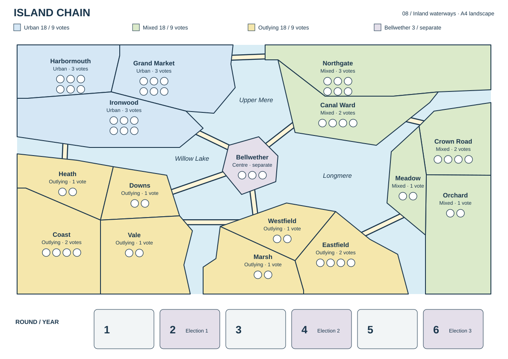

Concept 8
Island chain
The Island chain network becomes an inland lake district, with rivers separating continuous countryside and Bellweather on a central lake island.

How to read this map
Shared borders and marked bridges create adjacency for every effect. Districts touching only at a point are not adjacent. Water severs every other connection, including Smear. Lakes and rivers separate the land areas, which reach the map edge. No route lines are needed within contiguous land. Elections still happen in each district; each region holds 18 Support and up to 9 votes. Bellweather holds 3 separate Support.
Previous ocean layout · Archived ocean geometry · Original route-based Island chain · Archived concept data.
{kind=link}
{kind=link}
Deliberate departures
Outer territories reach the map edge. Lakes occupy the central basins and rivers divide the surrounding land, with the same nine bridges and 23 adjacencies as the ocean version. Shared borders and bridges define adjacency for every effect; water blocks all other connections. Urban stays contiguous, and Bellweather remains on its own central island. The landscape A4 sheet retains its six-year tracker.
What to watch in play
The travel network is unchanged: compare the direct bridges through Bellweather with the outer river crossings. Watch whether the inland geography makes the available routes easier to read, and whether the outer rural bridges remain attractive.
What the connections imply
This map has 23 connections. Bellweather connects to Ironwood, Canal Ward, Westfield, Downs.
Every district has at least two connections.
No single district is the sole gateway joining parts of the map.
Every connection has an alternative route through the network.
Each scoring region is connected internally by its own districts.
These checks describe the printed graph. Occupied Support spaces and the cost of establishing party presence can still make a route difficult to use.
Special crossings and main corridors
- Grand Market–Northgate: bridge.
- Canal Ward–Crown Road: bridge.
- Meadow–Eastfield: bridge.
- Westfield–Vale: bridge.
- Heath–Ironwood: bridge.
- Ironwood–Bellweather: bridge.
- Canal Ward–Bellweather: bridge.
- Westfield–Bellweather: bridge.
- Downs–Bellweather: bridge.
Inspect every district and its neighbors
| District | Scoring region | Support / votes | Connected districts |
|---|---|---|---|
| Harbormouth | Urban | 6 / 3 | Grand Market, Ironwood |
| Grand Market | Urban | 6 / 3 | Harbormouth, Ironwood, Northgate |
| Ironwood | Urban | 6 / 3 | Harbormouth, Grand Market, Heath, Bellweather |
| Bellweather | Centre | 3 / separate | Ironwood, Canal Ward, Westfield, Downs |
| Northgate | Mixed | 6 / 3 | Grand Market, Canal Ward |
| Canal Ward | Mixed | 4 / 2 | Northgate, Crown Road, Bellweather |
| Crown Road | Mixed | 4 / 2 | Canal Ward, Orchard, Meadow |
| Orchard | Mixed | 2 / 1 | Crown Road, Meadow |
| Meadow | Mixed | 2 / 1 | Crown Road, Orchard, Eastfield |
| Westfield | Outlying | 2 / 1 | Eastfield, Marsh, Vale, Bellweather |
| Eastfield | Outlying | 4 / 2 | Meadow, Westfield, Marsh |
| Marsh | Outlying | 2 / 1 | Westfield, Eastfield |
| Heath | Outlying | 2 / 1 | Ironwood, Downs, Coast |
| Downs | Outlying | 2 / 1 | Heath, Vale, Bellweather |
| Vale | Outlying | 2 / 1 | Westfield, Downs, Coast |
| Coast | Outlying | 4 / 2 | Heath, Vale |